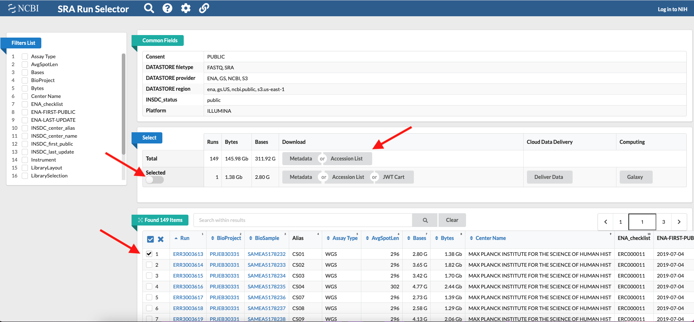

3. Useful commands¶
3.1. Download FASTQ sequencing data from the SRA¶
To download fastq sequences deposited in the Sequence Read Archive (SRA) of the NCBI we wil use SRA Tools. You can install SRA Tools with Conda.
Go to the SRA website and search the accession number of the study you interested in (e.g. PRJEB30331). A list of all the sequences deposited under that accession number is returned, click on Send results to run selector. In the Run Selector all the details associated with the sequencing data are reported and you can select single samples/sequences by ticking the box next to each one. If you select any samples, remember to tick also the Selected button. Then click on the tab Metadata
A file SRR_Acc_List.txt is downloaded containing the list of samples that you selected (the Run accession number), or the full list if you did not select any samples.
The sra filea are downloaded in a folder created by SRA Tools which normally has the following path: ~/ncbi/public/sra.
To download the sequences type the following command:
cat SRR_Acc_List.txt | xargs -I{} prefetch {}
To extract the fastq sequences from the sra file use fastq-dump:
fastq-dump --split-files --gzip *.sra
Validate the integrity of the sra file:
vdb-validate SRR061294.sra
3.2. Download referece sequences from the NCBI¶
Download the assembly_summary.txt file from the RefSeq database for the taxonomic group of interest. You can download assemblies of different groups:
ftp://ftp.ncbi.nlm.nih.gov/genomes/refseq/bacteria/assembly_summary.txt ftp://ftp.ncbi.nlm.nih.gov/genomes/refseq/vertebrate_mammalian/assembly_summary.txt ftp://ftp.ncbi.nlm.nih.gov/genomes/refseq/plant/assembly_summary.txt ftp://ftp.ncbi.nlm.nih.gov/genomes/refseq/protozoa/assembly_summary.txt ftp://ftp.ncbi.nlm.nih.gov/genomes/refseq/fungi/assembly_summary.txt ftp://ftp.ncbi.nlm.nih.gov/genomes/refseq/bacteria/Yersinia_pestis/assembly_summary.txt
Keep in mind that the RefSeq content includes assembled genome sequence and annotation data. All RefSeq genomes have annotation. Subdirectories include:
archaea
bacteria
fungi
invertebrate
plant
protozoa
vertebrate_mammalian
vertebrate_other
viral
mitochondrion [Content is from the RefSeq release FTP site.]
plasmid [Content is from the RefSeq release FTP site.]
plastid [Content is from the RefSeq release FTP site.]
Once downloaded, we will used this file to retrieve the ftp address that contains the folder with the genome of the species we are looking for, plus many other files.
You can open the assembly_summary file in a text editor and search the assemblies available the species of interest.
Otherwise you can explore the complete genomes and the latest assemblies for a peculiar species by piping grep and awk. AWK is a scripting language for advanced text elaboration. You can find more infos in here (italian, english).
grep "Yersinia pestis" assembly_summary.txt | awk -F "\t" '$12=="Complete Genome" && $11=="latest"{print $0}'
If too many results are returned you can pipe less, and use the option -S to view the lines as unwrapped (they will be truncated if longer than the screen width):
grep "Yersinia pestis" assembly_summary.txt | awk -F "\t" '$12=="Complete Genome" && $11=="latest"{print $0}' | less
grep "Yersinia pestis" assembly_summary.txt | awk -F "\t" '$12=="Complete Genome" && $11=="latest"{print $0}' | less -S
Note
The print sintax in awk determines which column of the text file is displayed based on the column separator, which in turn is defined by the option -F ("\t" stands for tab-delimited text). To display all the columns use $0, otherwise select the columns based on the order ($1,$2 to display the first two columns).
You can display only the columns corresponding to the ftp directory ($20), the organism name ($8) and the strain ($9), and copy the ftp path to the species directory of interest (this will be used in the rsync command below).
grep "Yersinia pestis" assembly_summary.txt | awk -F "\t" '$12=="Complete Genome" && $11=="latest"{print $8,$9,$20}' | less
If you want, you can also redirect the output to a file (called here ftpdirpaths.txt).
grep "Yersinia pestis" assembly_summary.txt | awk -F "\t" '$12=="Complete Genome" && $11=="latest"{print $8,$9,$20}' > ftpdirpaths.txt
In this example, the ftp path of the species of interest looks like this: ftp.ncbi.nlm.nih.gov/genomes/all/GCF/001/717/545/GCF_001717545.1_ASM171754v1
To download the ftp directory containing the reference sequence, we will use rsync, a versatile file copying tool that can copy locally, to/from another host over any remote shell. Paste the ftp path to the following command to download the sequence:
rsync --copy-links --recursive --times --verbose rsync://ftp.ncbi.nlm.nih.gov/genomes/all/GCF/001/717/545/GCF_001717545.1_ASM171754v1 .
Inside the folder, the reference sequence that you will use for the alignment of your reads has the suffix _genomic.fna.gz.